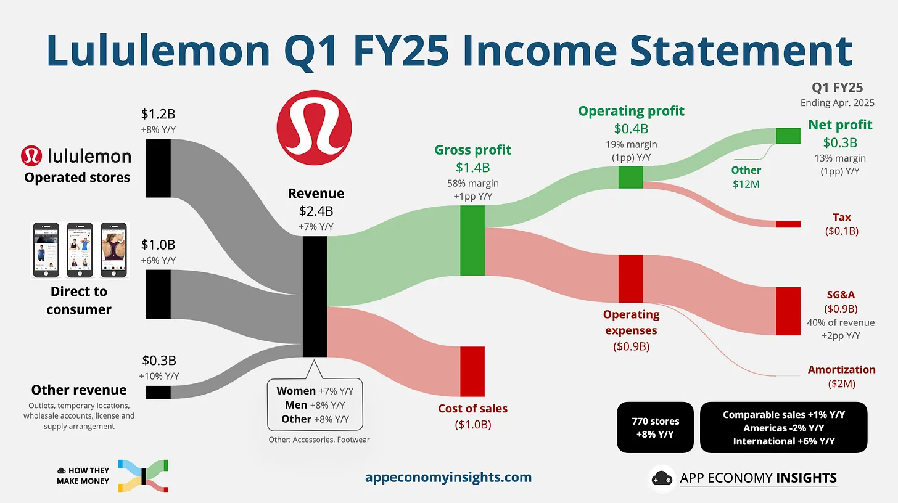
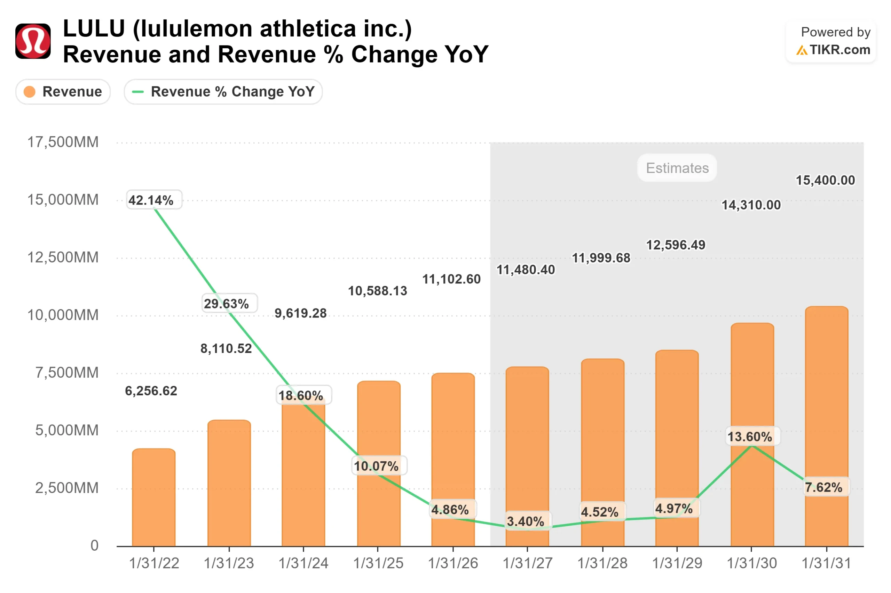
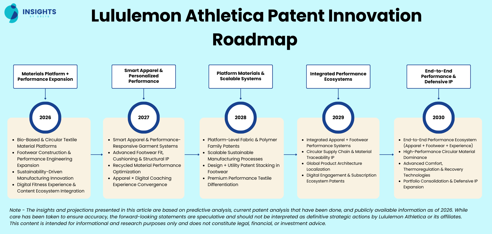
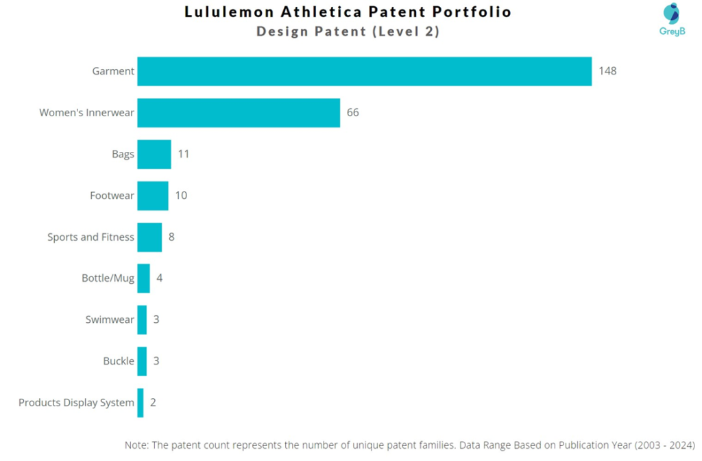
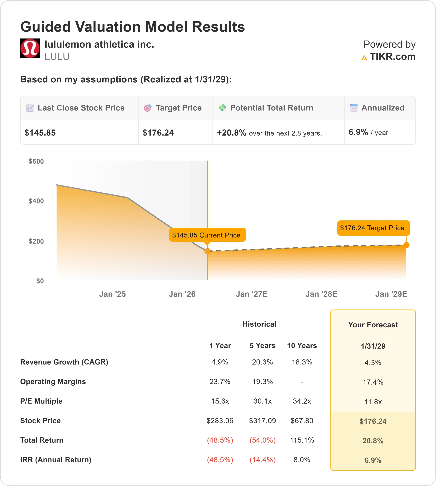
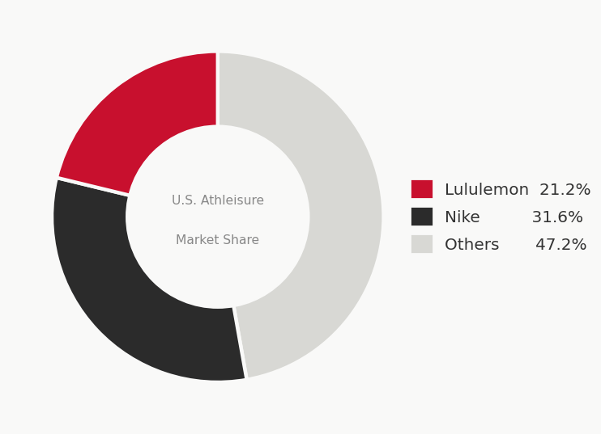
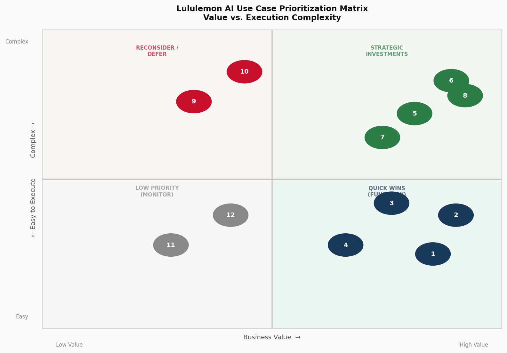
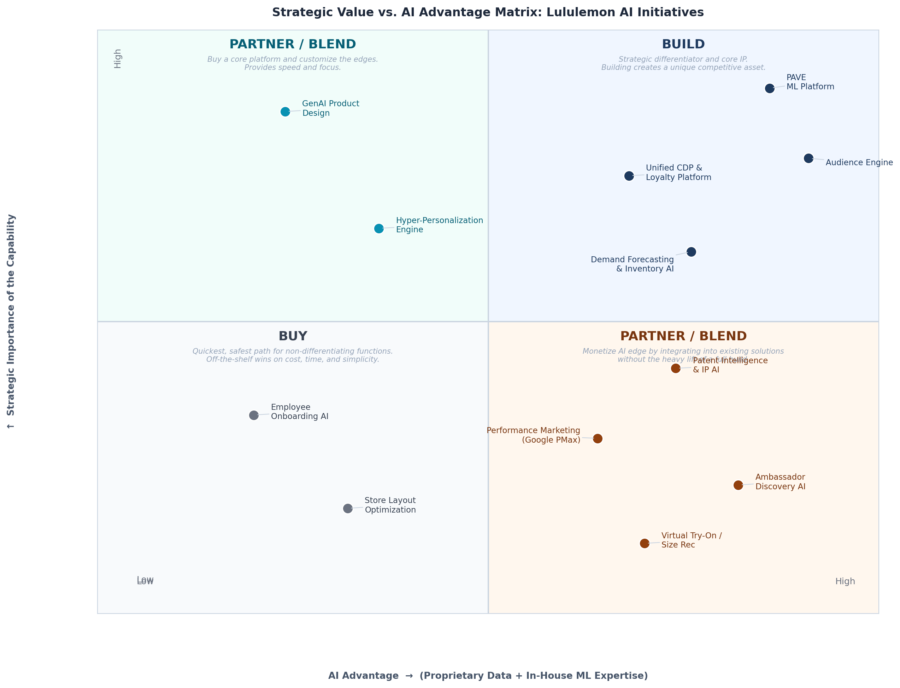
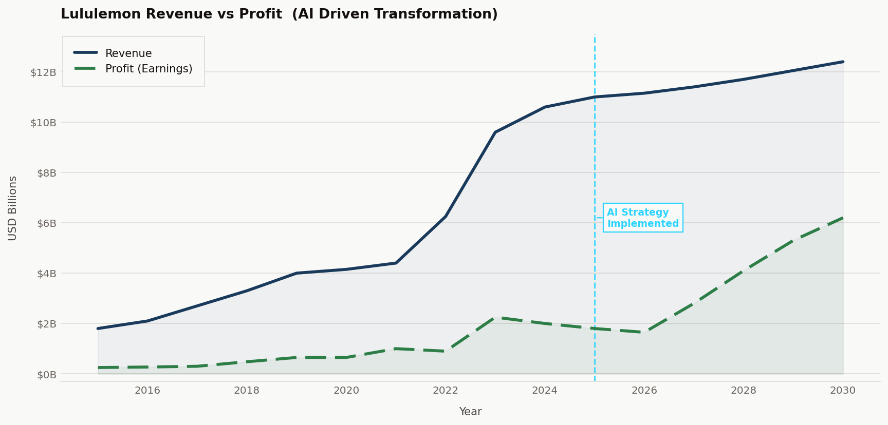
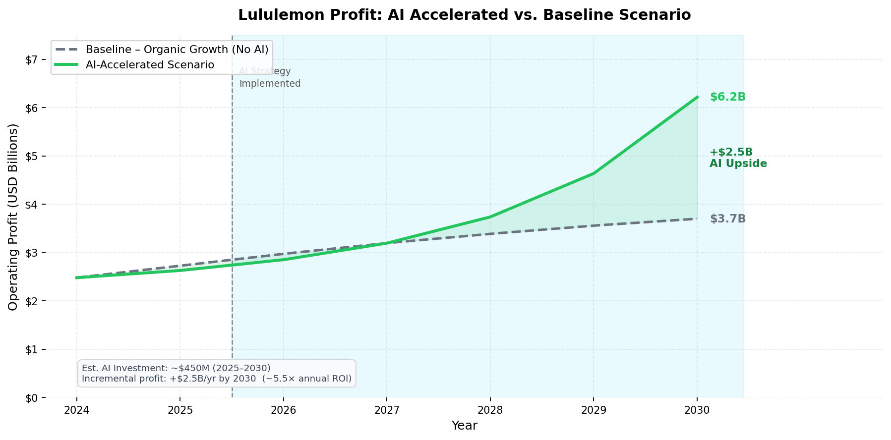

AI Strategy & Transformation · Full Document · April 2026
Building the AI Foundation for Lululemon’s Next Growth Chapter
Lululemon has built a $10B+ premium athleisure brand on community, product quality, and culture. Yet with U.S. comparable sales declining 4% in Q2 FY2025, stock down ~48% from 2025 highs, and competitors like Alo Yoga and Vuori aggressively targeting its core customer, the company stands at a strategic inflection point. The answer to reigniting growth is not simply more marketing spend. It is a disciplined, end-to-end AI transformation.
This report assesses Lululemon's current AI capabilities, benchmarks them against key competitors, identifies material gaps, and proposes a comprehensive AI strategy framework. The central argument: Lululemon has strong foundational assets, 20M+ loyalty members, a proven in-house ML platform (PAVE), a Bengaluru engineering hub, and a newly appointed Chief AI & Technology Officer, but these must be organized around a coherent, phased strategy that prioritizes data unification, product innovation acceleration, and hyper-personalization at scale.
Three strategic priorities emerge from this analysis:
Build a unified Customer Intelligence Platform that activates Lululemon's proprietary loyalty data as a true competitive moat.
Embed AI into the product development lifecycle to close the design-to-market gap with fast-fashion AI competitors.
Scale personalization from a channel tactic to a company-wide capability that deepens brand loyalty and drives premium pricing power.
Estimated total AI strategy investment: ~$450M over 2025–2030. Projected incremental revenue impact: $2–3B in additional annual revenue by 2030, with gross margin improvement of 150-200 basis points from supply chain and inventory optimization.
Section 1: Company & Industry Context
1.1 Lululemon at a Glance
Founded in 1998 and headquartered in Vancouver, British Columbia, lululemon athletica has grown from a single yoga apparel store into one of the most recognized premium athletic apparel brands in the world. The company has succeeded by cultivating an aspirational community identity, the "Lululemon Guest", around performance, wellness, and self-improvement.
| Metric | FY2025 / Latest Data |
| Revenue | ~$10.6B (+10% YoY; slowing from 18.6% in FY2024) |
| Americas Revenue Share | ~74% of total; Americas comparable sales -4% in Q2 FY2025 |
| International Revenue | +22% growth, primary growth engine |
| Loyalty Members | 20M+ active Essentials members |
| Stock Performance | Down ~48% through late 2025 (from 2024 highs) |
| Key Strategic Challenge | U.S. market saturation + product execution missteps |
The two charts above project the financial outcome of full AI strategy execution. Figure 9 models Lululemon's revenue trajectory from 2015 through 2030, illustrating how AI-driven personalization, inventory efficiency, and international expansion compound into sustained top-line growth, with an AI-accelerated path reaching an estimated $16–18B in revenue by 2030, compared to a baseline projection of approximately $13–14B, a difference of $3–4B in incremental annual revenue. Figure 10 isolates the operating profit impact: a ~$450M AI strategy investment is projected to generate approximately $3.6B in annual incremental operating profit by 2030, an ~8× return on investment. The divergence between the AI-accelerated and baseline profit curves widens meaningfully after 2026 as personalization and supply chain efficiencies compound, with the accelerated scenario reaching an estimated ~$6.2B in annual operating profit by 2030, compared to a ~$2.6B baseline, reflecting an operating margin of approximately 38% as personalization and efficiency gains compound.

Figure 1. Lululemon Q1 FY25 Income Statement (quarter ending April 2025). Operated stores ($1.2B) and Direct to Consumer ($1.0B) revenue channels were nearly equal, underscoring the strategic importance of the DTC digital experience. Source: App Economy Insights (appeconomyinsights.com).
The near-parity between physical retail and DTC channels matters strategically: AI investments in the digital experience (personalization, AI search, virtual try-on) carry equal weight to in-store improvements. Both channels must be improved simultaneously to return the Americas business to growth.
The more urgent context is the revenue growth deceleration. Lululemon grew at 42% in FY2022 and 30% in FY2023. By FY2026, growth has slowed to under 5%, and analyst consensus estimates suggest a stabilization in the 4–8% range through 2031 rather than a return to prior hyper-growth. Management has acknowledged the cause: product life cycles ran too long, the line became too predictable, and the brand missed opportunities to create new trends [4][19].
Lululemon's "Power of Three x2" corporate strategy sets the growth ambition: double menswear and digital revenue, and quadruple international revenue from 2021 levels, targeting approximately $12.5B in revenue by FY2026 [24]. International expansion is the clearest near-term growth engine, Lululemon has ~140 stores in China (its second-largest market), targeting 200, with mainland China revenue growing 46% in the most recent quarter reported. The company announced in December 2025 that it will open stores in six new international markets in 2026, and is shifting 10–15% of new openings to a franchise model to reduce capital intensity [23]. Tariffs represent a material headwind: Lululemon projects approximately $240M impact on 2025 gross profit from trade policy changes, adding urgency to every margin-preservation lever including AI-driven operational efficiency [25].

Figure 2. Lululemon Revenue and Revenue % Change YoY, FY2022–FY2031E. Revenue growth has decelerated sharply from 42% (2022) to under 5% (2026), with analyst estimates projecting continued single-digit growth. The shaded area represents analyst consensus estimates. Source: TIKR (tikr.com) [19].
1.2 Industry Context: Athleisure & AI Disruption
The global athleisure market reached $440 billion in 2025 and is projected to grow to $624 billion by 2030, at a 7.2% CAGR [11]. This growth is being reshaped by a convergence of AI-driven capabilities across the retail value chain: demand forecasting, personalized digital experiences, and AI-accelerated product development are rapidly shifting from competitive differentiators to table stakes.
McKinsey's State of Fashion 2026 report signals that AI is "shifting from a competitive edge to a business necessity" for fashion brands [10]. Brands deploying AI-driven production planning and inventory optimization are reducing costs by up to 26%. Online DTC channels, a core Lululemon business, are growing at 52% industry-wide, and AI personalization is central to conversion rate improvement in this channel.
Three structural disruption forces are particularly relevant for Lululemon:
AI-native fast-fashion competitors (Zara, Shein) are collapsing product development cycles from months to weeks using AI-driven trend sensing and rapid prototyping [14].
Real-time inventory optimization powered by AI is eliminating the chronic markdowns and stockouts that erode margin for traditional retailers [16].
Hyper-personalized digital experiences, enabled by AI, are raising customer expectations for relevance, making generic experiences feel inadequate and undermining premium brand value over time.
1.3 Competitive Landscape
Lululemon faces intensified competition on multiple fronts simultaneously. Alo Yoga and Vuori are pressing aggressively in premium athleisure, Lululemon's core segment, competing on brand culture, price accessibility, and social media relevance to erode share with the exact customer Lululemon depends on [12]. Nike and Adidas compete in the performance and technical categories, with Nike holding 31.6% of U.S. athleisure spending versus Lululemon's 21.2% [25], and Nike continuing to expand its AI-powered product and data capabilities at scale. In running and technical apparel specifically, Lululemon risks share erosion from both directions, premium challengers below and performance incumbents above, without a differentiated product innovation engine to create clear separation.
In the U.S. athleisure market, Nike commands 31.6% of spending versus Lululemon's 21.2%, a meaningful share gap that reflects Nike's broader category footprint and its head start in AI-driven product and operations [25]. In premium athleisure specifically, the primary competitive threat comes not only from legacy athletic brands like Nike and Adidas, but increasingly from agile, culture-first challengers like Alo Yoga and Vuori, who are competing directly for Lululemon's core demographic. The table below summarizes AI maturity across key competitors.
| Brand | AI Maturity | Key AI Bets & Observations |
| Nike | High | Acquired Celect for demand forecasting (6 months → 30 minutes); Nike Adapt Link AI-designed sneaker (2025); athlete biometric data integration; unified CDP at massive scale [8] |
| Adidas | Medium | Findmine AI partnership for outfit recommendations; AI-personalized shopping; following rather than leading |
| Under Armour | Low / Catching Up | Appointed Head of AI & Advanced Analytics in 2025; using IBM AI technology; clearly in reactive mode |
| Alo Yoga | Medium | AI-enabled influencer marketing; culturally resonant positioning; competing on values alignment. Aggressive growth at the expense of Lululemon's core customer [12] |
| Vuori | Emerging | Fast-growing challenger; limited public AI strategy; competing on brand story and lifestyle positioning |
| Lululemon | Medium / Ascending | New CAITO role (2025); PAVE ML platform (marketing); DTC personalization scaling; supply chain AI emerging; product design AI in PoC stage [1][2] |
Section 2: Lululemon's Stated AI Strategy
2.1 The Big Signal: First-Ever Chief AI & Technology Officer
In August 2025, lululemon made its most definitive statement about AI's role in its future: it appointed Ranju Das as its first-ever Chief AI & Technology Officer (CAITO), effective September 2025. Das reports directly to CEO Calvin McDonald, a governance structure that signals board-level strategic commitment, not an incremental IT investment.
Das brings substantive AI credentials: 20+ years in enterprise AI and technology, including as a General Manager of Amazon AI Services, with cross-industry experience spanning healthcare, fintech, and consumer technology. Critically, the CAITO role was created by elevating and renaming the former CIO role vacated by Julie Averill, a deliberate reframing of what technology leadership means for Lululemon's future [1][2].
CEO Calvin McDonald articulated the strategic vision in the appointment announcement:
"We see an exciting opportunity to further leverage AI and technology to advance our product innovation process, improve our agility and speed to market, and bring more engagement and personalization to our guest experience."
Calvin McDonald, CEO, lululemon athletica
Ranju Das added on the opportunity ahead:
"The opportunity to leverage technology and AI across the retail value chain to elevate how we serve our guests has never been greater."
Ranju Das, Chief AI & Technology Officer, lululemon athletica
2.2 Three Strategic AI Pillars
Based on leadership statements, earnings call commentary, and press releases, Lululemon has articulated three AI-focused strategic pillars [1][2][4]:
Product Innovation, Using AI to accelerate design processes, improve materials testing, and compress go-to-market timelines. The company has described generative AI augmentation of the design workflow as a core focus area.
Supply Chain Agility, Applying AI to merchandise planning, demand forecasting, and inventory optimization to improve speed, accuracy, and gross margin.
Guest Personalization, Deepening engagement with Lululemon's 20M+ loyalty members through more relevant, AI-driven experiences across digital channels and in-store interactions.
2.3 Historical Tech Investment Track Record
Understanding where Lululemon is going requires understanding where it has been. The company's technology investments under former CIO Julie Averill helped scale the business from roughly $6B to $10.6B in annual revenue, a meaningful operational infrastructure build.
However, the most instructive data point is the Mirror acquisition. In 2020, Lululemon paid $500M for Mirror, a connected fitness device company, with the strategic rationale of building a loyalty ecosystem anchored by a hardware-enabled fitness data moat. By 2023, Mirror was fully written down, the hardware business collapsed when pandemic-era stay-at-home tailwinds reversed. This experience is critical context for evaluating the new AI strategy: it demonstrates both the company's appetite for ambitious technology bets and the execution risk when strategic assumptions prove incorrect.
Three important lessons from Mirror for the current AI strategy:
Hardware-dependent data strategies require sustained changes in consumer behavior, a high-risk bet for a premium apparel brand.
A $500M write-off should create governance discipline around technology investments, particularly large bets in unproven categories.
AI capabilities embedded in the core product (apparel, DTC experience, supply chain) carry far lower structural risk than standalone technology products.
Section 3: AI Readiness Assessment, Capability Tiering
The most important analytical lens for evaluating Lululemon's AI readiness is a capability tier framework that distinguishes between three fundamentally different types of AI investment. Not all "AI" creates equal strategic value, and the distinction matters enormously for understanding competitive moat and investment priorities.
| Tier | Definition | Strategic Implication |
| Tier 1: Proprietary | AI capabilities built, trained, or engineered in-house, genuine competitive IP | Defensible moat; cannot be purchased by competitors |
| Tier 2: Licensed + Configured | Licensed vendor platforms configured and integrated by Lululemon, operational investment, not proprietary IP | Competitively replicable but requires operational expertise to maximize value |
| Tier 3: Off-the-Shelf Vendor AI | AI tools purchased as commodity products, Lululemon is simply a customer | Any competitor can buy the same capability; value comes from being an early or skilled adopter |
3.1 Tier 1: Proprietary AI Capabilities
These are the AI capabilities Lululemon has meaningfully built, trained, or engineered internally, representing genuine competitive IP.
| Capability | What It Is | Evidence & Status |
| PAVE (Propensity and Value Engine) | Internal ML platform built by the CRM Audience Data Science team. Scores millions of guest profiles to drive personalized marketing across email, push notifications, web, and paid media. | Databricks Data + AI Summit 2026 session confirms Lululemon presenting this as their own production system. Uses Databricks MLflow, Unity Catalog, and DABS pipelines as infrastructure, the models appear to be proprietary. |
| India Tech Hub (Bengaluru) | 250+ technologists focused on developing and deploying AI models. Represents organizational investment in internal AI capability. | Confirmed via public company statements and industry reporting. Organizational investment, capability still being built and realized. |
| RFID + Demand Forecasting Models | Internal pilot models for inventory accuracy and out-of-stock reduction in select regions. | Reported double-digit reduction in stockouts in mid-2024 pilots. Attribution between proprietary and vendor-assisted models is unclear publicly. |
Honest Assessment: PAVE is the most concrete evidence of proprietary AI. Beyond that, the internal AI capability base is thin and still being built. The CAITO hire in September 2025 is arguably the starting gun for serious Tier 1 investment.
3.2 Tier 2: Licensed & Configured Platforms
These are AI tools Lululemon licenses from vendors but has meaningfully configured, integrated into workflows, or built upon. These represent operational investment and require internal expertise, but are not proprietary IP, a competitor could buy the same platform.
| Capability | Vendor / Platform | How Lululemon Has Configured It |
| E-commerce & Personalization | Salesforce Commerce Cloud | Powers DTC e-commerce; personalization and recommendations layered on top of platform capabilities. |
| Digital Experience Analytics | Quantum Metric | Identifies checkout friction points. Lululemon quantified "multi-tens of millions dollar impact" from fixes enabled by this tooling. |
| Customer Support | Salesforce Service Cloud | Powers Guest Support Workspace integrating front, middle, and back-office support workflows. |
| Cloud & ML Infrastructure | AWS + Databricks | AWS runs development and test environments. Databricks provides the infrastructure for PAVE (MLflow, Unity Catalog, DABS). The underlying platform is vendor-provided; the models built on it are proprietary. |
| Generative AI for Product Design | Vendor unconfirmed (likely OpenAI/Azure/Adobe Firefly class) | Augmenting designers with GenAI for faster concept exploration. Still in proof-of-concept as of early 2024; scaling in 2025. [4] |
3.3 Tier 3: Off-the-Shelf Vendor AI
These are AI tools where Lululemon is simply a customer of another company's AI product. Strategic value comes from being an early or skilled adopter, not from proprietary capability.
| Capability | Vendor | Reality Check |
| Performance Marketing Optimization | Google Performance Max | Google's AI optimizes ad spend across Search, YouTube, etc. Lululemon restructured its campaign architecture to maximize results, real operational skill, but replicable. [3] |
| AI-Powered Website Search | Likely Salesforce Einstein, Coveo, or Algolia | Intelligent conversational search is almost certainly a configured vendor product. Valuable capability; not proprietary. |
| Virtual Try-On | Vendor unconfirmed, third-party AR/visual AI | The +25% conversion lift claim is plausible, but the underlying technology is almost certainly vendor-sourced. [5][6] |
| Size Recommendations | Likely True Fit, Fit Predictor, or similar | Standard retail technology available to any competitor at similar cost. |
3.4 The Honest Capability Gap Summary
When the tier framework is applied, Lululemon's genuine proprietary AI reduces to a short list: PAVE (a real ML platform, but focused on marketing), early-stage generative AI for product design (still nascent), an India engineering hub (organizational investment not yet converted to capability), and a new CAITO (a critical organizational signal, not yet realized AI capability).
This is not a condemnation, most traditional retailers are at a similar or earlier stage. But it makes the strategic question sharp: what should Lululemon actually build versus buy versus partner, and over what timeline? This is the central question this strategy framework addresses.
Section 4: Current AI Use Cases, What Is Actually Working
4.1 Performance Marketing, Most Mature, Proven ROI
Lululemon's most measurably successful AI deployment is in performance marketing, specifically through Google Performance Max (Tier 3 vendor AI). The company restructured its campaign architecture around AI-driven optimization and achieved the following results [3]:
ROAS (return on ad spend) improved +8%
New customer revenue share increased from 6% to 15%
Reduced customer acquisition costs on non-branded campaigns
Won top honors at Google Search Honours Awards (Canada)
The strategy has been exported to international markets following Canadian success
Status: Live and producing consistent, measurable results. This is the benchmark for AI ROI within the organization, and importantly, it demonstrates that Lululemon's marketing team has the operational capability to configure and extract value from AI tools at a sophisticated level.
4.2 Personalization & E-Commerce, Active and Scaling
Lululemon's digital experience is supported by an expanding set of AI-powered personalization capabilities, spanning its website, app, and virtual styling interactions [5][6]:
AI-powered product recommendations on website and mobile app
Conversational AI search: when a customer types "black tights," the AI asks clarifying questions (pockets? length?) to surface the right product
Virtual try-on features reported to generate +25% increase in online conversion rates
AI-powered personal stylist handled 1M+ customer interactions in 2023, with 92% satisfaction score
AI-assisted styling contributes to +35% higher average order value for engaged customers
The PAVE platform (Tier 1 proprietary) powers the underlying audience scoring that drives personalized marketing communications across email, push notifications, web, and paid media. This is the area where Lululemon's proprietary AI and vendor AI capabilities are most deeply integrated.
Status: Active and scaling. The clearest growth lever for the DTC channel, which is Lululemon's highest-margin business.
4.3 Inventory & Supply Chain Optimization, Active, Margin-Generating
Lululemon has invested $18M in AI-based supply chain technology, with applications in merchandise planning, store clustering, and inventory optimization. AI inventory optimization is estimated to contribute 100-150 basis points of gross margin improvement, though the exact attribution between AI and other operational improvements is not broken out in public filings [5].
RFID-enabled inventory tracking pilots demonstrated double-digit reductions in out-of-stock rates in select regions. The company has also filed patents for wearable technology (biometric fitness belts) that could create a longer-term behavioral data asset, though this remains speculative.
Status: Active; generating margin contribution. The specific vendor contributions are not fully public, which makes competitive benchmarking difficult.
4.4 Product Design & Development, Early Stage
Generative AI is being used to augment Lululemon's design team: exploring design concepts faster, reducing iteration cycles, improving materials testing, and analyzing consumer feedback patterns to inform design decisions. Leadership has cited AI-accelerated go-to-market timelines as a specific focus area for the CAITO mandate [4].
Status: Proof-of-concept transitioning to scaled deployment in 2025+. This is the area with the highest strategic upside, and the largest gap relative to AI-native fast-fashion competitors like Zara, who are using AI trend sensing to compress design cycles to weeks [14].
4.5 Connected Fitness / Data Ecosystem, Failed Bet
The Mirror acquisition ($500M, 2020) represented Lululemon's most ambitious technology bet: a hardware-enabled fitness data ecosystem intended to deepen loyalty and create a unique behavioral data asset. When pandemic-era home fitness tailwinds reversed, Mirror's business model collapsed and the investment was fully written down in 2023.
Mirror is critical context for the current AI strategy, not as a reason to avoid ambition, but as a reminder that technology strategies dependent on behavioral change or hardware adoption carry structural risk that must be priced into investment decisions.
4.6 AI-Powered Employee Onboarding & In-Store Product Intelligence, Sponsored PoC
In 2024, Lululemon sponsored a University of Washington iSchool capstone project to develop an AI tutor for newly hired store associates, designed to reduce onboarding time and accelerate product knowledge [18]. The tool is intended for use via tablet or smartphone on the sales floor, giving associates real-time product reference capability while helping a customer.
The strategic logic is straightforward: Lululemon's premium brand is partly built on knowledgeable associates who can speak credibly about fabric technology, fit philosophy, and product differences. High retail turnover, an industry-wide challenge, constantly erodes that expertise. An AI tutor that compresses the ramp-up period from weeks to days protects the brand experience and reduces the revenue drag of onboarding lag.
The tool also has a natural evolution path: from internal training aid to on-the-spot customer reference tool, and eventually to a customer-facing capability (a product knowledge assistant accessible via the Lululemon app or in-store kiosk). Lululemon's sponsorship of the UW project signals active investment in this direction; full deployment status is not publicly confirmed.
Status: University-sponsored proof of concept; likely informing internal product development. Deployment status unconfirmed.
4.8 AI-Assisted Patent Intelligence & IP Protection, Strategic Recommendation
Intellectual property is a core and underappreciated element of Lululemon's competitive moat. The company holds 925 patents globally (717 active) across 400 patent families, including 255 design patents covering garments, women's innerwear, footwear, bags, and displays, plus 412 US filings and a growing portfolio in technology domains including health monitoring and user interfaces [20]. The filing cadence is active, Lululemon saw its highest patent activity growth in Q2 2024.
The strategic urgency of AI in this domain is sharpest in the footwear category. In 2023, Nike filed suit against Lululemon alleging that its Blissfeel, Chargefeel, and Strongfeel shoes infringed Nike's patented sneaker technology. A federal jury ruled in Nike's favor, awarding $355,450 in damages [21]. The dollar amount was modest, but the precedent is significant: as Lululemon accelerates into footwear and new product categories, inadequate freedom-to-operate analysis before launch creates real legal and reputational exposure. AI directly addresses this risk.

Four distinct AI applications create value across the IP lifecycle:
Knockoff Detection (Highest Immediate ROI). AI vision models can continuously scan major e-commerce platforms, Amazon, Alibaba, Temu, Shein, for products that visually infringe Lululemon's design patents. For a premium brand whose designs are frequently copied, this converts what is currently a reactive and manual legal process into a proactive, automated enforcement system. The same technology that identifies fake Lululemon products can also flag near-identical design copies from fast-growing challengers like Alo Yoga.
Freedom-to-Operate Analysis. AI patent search tools such as IPRally (which uses graph neural networks to understand patent logic) and Solve Intelligence can conduct FTO analysis across millions of patents in minutes rather than weeks of attorney time [22]. Before Lululemon launches any new product category, particularly in footwear, where the Nike loss is fresh, rapid AI-powered FTO analysis should be standard practice. At $10,000–$30,000 per traditional patent search, AI can reduce this cost by 30–50% while dramatically compressing timelines.
Competitive Patent Monitoring. AI can monitor competitor patent filings in Lululemon's design and technology territories in real time. Early warning when Nike, Alo Yoga, or emerging players file in adjacent spaces allows Lululemon's legal and product teams to respond before conflicts emerge, filing defensively, adjusting designs, or initiating opposition proceedings.
Patent Drafting Assistance. Generative AI tools can draft initial patent applications from inventor disclosures, compressing the time from design innovation to IP protection and reducing the attorney hours required per application. Given Lululemon's high filing volume and active design pipeline, this operational efficiency compounds meaningfully at scale.
Status: Not publicly confirmed as a current Lululemon initiative. Identified here as a high-value strategic recommendation with direct precedent in the Nike litigation and an existing AI tooling ecosystem ready to deploy.

4.9 Local Brand Ambassador Program, AI-Assisted Discovery Opportunity
Lululemon's local brand ambassador program is one of its most distinctive and effective community marketing strategies, and one of the most difficult to scale. The program operates in two tiers: global ambassadors (elite athletes and widely known figures) and store ambassadors (local yoga instructors, fitness coaches, and community leaders whose photos appear in-store and who host classes and events at their local location) [26]. An estimated 40% of Lululemon customers engage with brand ambassadors through events and social media [27], making this program a core driver of the brand's community premium and a meaningful factor in the loyalty that sustains full-price selling.
Selection is currently personal and manual: candidates are identified through community relationships and must connect with the store in person. Across 770+ global locations, and growing rapidly internationally. This approach creates meaningful inconsistency in discovery. High-potential local ambassadors may never surface because they exist outside the store team's existing network.
AI offers a targeted but human-compatible enhancement: a geo-aware intelligence system that continuously monitors publicly available signals around each store's geographic radius to surface ambassador candidates for store teams to evaluate. Specifically, the system would aggregate:
Local news sources and community publications, identifying individuals recognized for fitness, wellness, or community leadership in that market
Local fitness event listings and results, race registrations, yoga teacher directories, community class instructors, studio partnerships
Geo-filtered social media signals, Instagram, TikTok, and (in China) Xiaohongshu/RED engagement patterns for rising fitness voices who are already organic Lululemon customers or community-adjacent figures
Community event mentions, local charity runs, fitness challenges, wellness events where potential ambassadors are organizers or featured participants
The output is a curated shortlist surfaced to store managers, not a replacement for the in-person relationship, but a consistently wider net that AI casts on the store team's behalf. The human judgment call remains entirely with local staff, preserving the authenticity that makes the program work.
This capability becomes especially strategic for international expansion. As Lululemon enters six new markets in 2026 [23] and scales toward 200 China stores, local store teams in new markets lack the established community relationships that experienced North American managers have built over years. AI-assisted ambassador discovery allows new market teams to identify authentic community voices faster, shortening the time from store opening to meaningful community embeddedness.
Status: No current AI application confirmed in this domain. Identified as a focused, practical AI recommendation with clear brand strategy alignment and low execution complexity relative to its potential impact.
4.7 AI-Optimized Store Layout, Emerging Opportunity
AI Expert Network identifies store layout optimization as one of Lululemon's AI use case areas [6]. The core concept: Lululemon operates hundreds of stores with varying physical configurations, and each store generates sales data by product category and location. AI can overlay layout parameters across the store fleet and identify which configurations drive the best outcomes.
A neural network approach would treat layout variables as model inputs, zone placement, entrance and exit positions, fitting room location, display type and height, traffic flow design, and sales performance metrics as outputs: revenue per square foot, conversion rate, average transaction value, and attachment rate. The model learns which layout patterns correlate with superior performance, controlling for store size, market type, and demographics.
Practical applications include: optimizing layouts for new store openings, prioritizing and designing remodels based on predicted ROI, testing layout changes virtually before committing to physical construction costs, and identifying underperforming zones in existing stores. Integrating foot traffic data, via RFID tracking or camera-based flow analysis, adds another dimension by mapping the actual path customers take to purchase.
The competitive moat is real: this capability requires Lululemon's proprietary multi-store layout and sales data, which no competitor can replicate. It is a classic example of using proprietary operational data as an AI input to generate advantages that cannot be purchased off the shelf.
Status: Identified as an AI opportunity; implementation depth and current deployment not publicly confirmed.
Section 5: Business Impact, Evidence & Gaps
5.1 What the Numbers Show
| Metric | Data Point | Attribution |
| Total Revenue (FY2025) | $10.6B (+10% YoY) | Broad business; AI is one of many contributors |
| Americas Comparable Sales (Q2 FY2025) | -4% | Problem area; AI gains in marketing have not offset product/market-fit issues |
| International Revenue Growth | +22% | Growth market; AI-driven marketing exports contributing |
| ROAS (AI Marketing Campaign) | +8% | Directly attributed to Google Performance Max AI [3] |
| New Customer Revenue (Marketing AI) | 6% → 15% | Direct AI attribution [3] |
| Online Conversion Rate (Virtual Try-On) | +25% | AI personalization; vendor attribution unclear [5][6] |
| Average Order Value (AI Styling) | +35% | AI-assisted personal shopping interactions [6] |
| Gross Margin Improvement (Supply Chain AI) | +100–150 bps (estimated) | Partially attributed to AI; not broken out in filings |
| Stock Price Performance (2025) | -48% (from 2024 highs) | Reflects broader investor concern about U.S. growth deceleration, not AI-specific |

Figure 3. Lululemon Guided Valuation Model (as of early 2026). Current stock price $145.85 vs. analyst target $176.24, representing +20.8% potential return over ~2.8 years. Historical 10-year operating margins of 18.3% contrast with the near-term compression driven by tariff pressure, fixed-cost deleverage, and brand reinvestment. Source: TIKR (tikr.com) [19].
Analyst consensus characterizes Lululemon as modestly undervalued at current levels, with recovery contingent on three execution factors: improving full-price sell-through (reducing markdowns), stronger product cycles driven by newness, and continued international expansion, particularly China, where Q4 revenue grew 28% [19]. Critically, all three of these recovery drivers have direct AI enablement paths already identified in this strategy.
Management has responded with specific tactical commitments: increasing new style penetration to approximately 35% in North America, rolling out updated store presentations, and shortening product timelines to better react to consumer demand [19]. These commitments translate directly into AI use cases, trend sensing, design acceleration, and inventory optimization, that form the core of the strategy framework in Section 7.
5.2 What We Do Not Know
Lululemon does not break out AI-specific P&L contribution in its earnings calls or public filings. Several important caveats apply to the data presented above:
Some "AI impact" figures (particularly around personalization and conversion) come from third-party analyses, analyst estimates, and secondary research, not from official company filings or investor presentations.
The U.S. business decline (-4% comparable sales) is the most important data point: it demonstrates that AI gains in marketing efficiency and conversion have not yet offset Lululemon's product/market-fit challenges in its core market.
The Mirror write-down ($500M) represents a significant historical data point about technology execution risk that must be held alongside optimistic AI impact figures.
Attribution of gross margin improvement to AI versus other operational changes (SKU rationalization, sourcing, etc.) is not independently verifiable from public disclosures.
Section 6: Competitive Intelligence, AI Benchmarking
6.1 Nike, The Benchmark Competitor
Nike is the clearest benchmark for where aggressive AI investment in athletic apparel can lead, and it illustrates the ambition gap Lululemon faces.
Demand Forecasting: Nike acquired Celect, a predictive analytics company, and compressed demand forecasting from 6 months to 30 minutes. This is not incremental improvement. It is a structural competitive advantage in inventory management and markdown reduction [8].
AI-Designed Product: In March 2025, Nike launched the Adapt Link, the first AI-designed sneaker, featuring embedded ML capabilities and biometric sensor integration. Nike is building AI into the product itself, not just operations [8].
Customer Data Platform: Nike has built a unified CDP that powers AI-driven personalization at scale across 100M+ members. The data advantage is enormous.
The takeaway: Nike is embedding AI into its core product, supply chain, and customer relationship simultaneously. Lululemon is primarily using AI for marketing efficiency and operational improvement.
6.2 Adidas, Incremental Follower
Adidas has partnered with Findmine for AI-powered outfit and product recommendations, and is investing in AI-personalized shopping experiences. The overall posture is more incremental and vendor-dependent than Nike's. Adidas is a fast follower in AI, not a leader, which is not a comfortable position when Nike is moving as aggressively as it is.
6.3 Under Armour, Reactive and Behind
Under Armour appointed its first Head of AI & Advanced Analytics in 2025, clearly playing catch-up. Using IBM AI technology for analytics. The reactive posture and late investment suggest Under Armour is not a credible AI threat to Lululemon in the near term.
6.4 Alo Yoga & Vuori, The New Threat Model
The most interesting competitive dynamic is not Nike or Adidas. It is Alo Yoga and Vuori. These challengers are competing for Lululemon's core customer on values, culture, and brand narrative, not product technology. Their use of AI-enabled influencer marketing and social commerce is highly effective without requiring the infrastructure investments of legacy brands [12].
The key insight: challenger brands like Alo and Vuori benefit from not having legacy infrastructure burdens and are able to build AI-native marketing and commerce capabilities from scratch. Lululemon's AI strategy must address both the established competitor threat (Nike) and the agile challenger threat (Alo, Vuori). These require different strategic responses.
6.5 AI Benchmarking: Fashion & Retail Industry Context
Beyond direct competitors, broader fashion and retail industry benchmarks are instructive. Stitch Fix has demonstrated how AI-powered personalization can be the core product, not just a feature, creating a defensible data flywheel [13]. Zara uses AI-driven trend sensing and rapid prototyping to compress design cycles from months to weeks, enabling fast-fashion responsiveness at premium quality [14]. Stylumia applies deep learning to trend forecasting, giving brands early signals on emerging consumer preferences [15]. These industry examples collectively point toward a future where AI is not a tool layered onto fashion retail. It is the operating system of the business.

Section 7: Strategic Questions & Framing for the AI Strategy
The following strategic tensions define the analytical framework for the AI strategy recommendations. These are not rhetorical questions. They are genuine strategic choices with materially different implications for investment, organizational design, and risk profile.
7.1 Late Mover or Smart Follower?
Lululemon is appointing its first CAITO in 2025. Nike has been building AI into its operations and products for years and has already acquired AI companies. The question is whether Lululemon is dangerously late, or whether it can leapfrog by building on more advanced tooling and infrastructure than was available when Nike began its AI journey. The answer depends heavily on what Lululemon chooses to build versus buy versus partner.
7.2 AI as Growth Engine or Cost Defense?
The clearest, most attributable AI wins to date (ROAS improvement, gross margin gains) are efficiency plays. The stalled U.S. business (-4% comparable sales) is a growth problem that efficiency AI alone will not solve. The strategic challenge is converting AI capability into genuine top-line growth, through product innovation, new market development, and deeper guest loyalty, not just operational optimization.
7.3 Mirror's Shadow
The $500M Mirror write-off is the single most important piece of context for evaluating Lululemon's AI ambitions. It demonstrates that the company can make large, bold technology bets, and get them badly wrong. The governance question for the new AI strategy: how do you build the ambition to invest meaningfully in AI transformation while institutionalizing the discipline to kill initiatives that are not working before they become $500M write-offs?
7.4 The Data Advantage Question
Lululemon has 20M+ loyalty members and rich behavioral data from app interactions, in-store purchases, and digital engagement. PAVE demonstrates that this data is being used for marketing scoring. The question is whether Lululemon is exploiting this asset to its full potential, or whether the data is siloed, fragmented, and under-activated. A unified Customer Intelligence Platform, if built properly, could be Lululemon's most durable competitive moat.
7.5 Build vs. Buy vs. Partner
Lululemon's technology history illustrates all three strategies: the Google partnership (proven, ongoing), the Mirror acquisition (failed), the Salesforce platform licensing (operational). The new AI strategy requires a principled framework for making these decisions at scale: what should be built in-house for proprietary advantage? What should be licensed because vendor solutions are sufficient? What should be acquired because building would take too long? The CAITO hire is the organizational answer to managing this portfolio, but the strategic framework needs to be made explicit.
7.6 Personalization at the Brand Premium
Lululemon charges premium prices because customers believe in the brand experience, the community, the quality, the aspiration. AI-driven personalization has the potential to deepen that relationship by making every customer interaction more relevant. But done poorly, it risks making the brand feel algorithmic, transactional, or surveilled. The strategic design question: how do you use AI to deepen the human, community-oriented brand experience rather than commoditize it?
Section 8: AI Strategy Framework
Lululemon's AI strategy is organized around three strategic pillars that reflect both its core business priorities and the evidence gathered in Sections 3–7. The pillars map to three natural domains of business activity: internal operations (what happens behind the scenes), product creation (what gets made), and customer experience (how guests interact with the brand). Each pillar can generate returns independently, but the full compounding effect emerges when all three operate together. Together they constitute a coherent AI transformation agenda rather than a collection of independent projects.
8.1 Strategic Framework Overview, The Three-Pillar AI Strategy
The three pillars were derived from converging evidence across the competitive landscape, Lululemon's current capability gaps, and the CEO's stated strategic priorities:
| Pillar | Strategic Objective | Key Evidence / Business Driver |
| 1. Intelligent Operations | Use AI to improve efficiency, reduce cost, and protect margin across back-office and store operations | $240M tariff headwind and 290bps gross margin decline [24][25]; $18M supply chain AI already invested [5]; associate training gaps across 770+ stores create brand inconsistency risk [18] |
| 2. AI-Accelerated Product Innovation | Embed AI in the design-to-market lifecycle to close the gap with AI-native fast-fashion competitors | CEO McDonald diagnosed product staleness as the Americas revenue driver [4]; Zara compresses cycles to weeks via AI [14]; Lululemon's product innovation AI is currently proof-of-concept [4] |
| 3. Customer Intelligence & Hyper-Personalization | Activate 20M+ loyalty members as a unified intelligence asset; scale personalization from a DTC tactic to a company-wide loyalty and revenue engine | PAVE ML platform exists but is marketing-only; personalization shows +35% AOV and +25% conversion [5][6]; wins are DTC-only today, in-store, ambassador, and international channels are untouched |
8.2 Pillar 1: Intelligent Operations
Lululemon faces real margin pressure: a projected $240M tariff impact, 290 basis points of gross margin compression, and the ongoing cost of scaling internationally [24][25]. AI-powered operational efficiency is the primary near-term lever for protecting profitability while growth investments mature. Critically, most of the AI capabilities in this pillar either already exist in early form (inventory optimization, supply chain technology) or can be deployed using commercially available tools on Lululemon's proprietary operational data.
Key AI capabilities in Pillar 1:
Inventory & Demand Planning. Lululemon has already invested $18M in AI-based supply chain technology and achieved double-digit reductions in stockouts in pilot programs [5]. The opportunity is to extend this into real-time demand sensing, reducing overbuying, minimizing markdown exposure, and improving inventory turns. AI inventory intelligence feeds directly into management's stated goal of returning North America to healthier full-price selling.
Supply Chain & Sourcing Optimization. AI-assisted supplier analytics can identify consolidation opportunities across Lululemon's specialized fabric and manufacturing network, improving lead times and reducing cost complexity. Given Lululemon's dependence on specialized technical fabrics and the tariff environment [25], multi-year supply chain AI is a high-value but complex initiative.
AI-Powered Associate Training. The UW iSchool-sponsored AI tutor proof-of-concept [18] compresses associate onboarding from weeks to days and protects the in-store brand experience at scale. As franchise openings increase (10–15% of new stores [23]), an AI-trained associate workforce ensures brand consistency that cannot be delivered through traditional training alone.
Store Layout Optimization. Neural network models trained on layout parameters and sales outcomes across the store fleet identify which configurations maximize revenue per square foot, conversion, and attachment rate. As Lululemon opens stores in six new markets in 2026 [23], AI-informed layout design reduces the cost of physical trial and error.
Pillar 1 is where AI delivers its fastest measurable ROI. Many capabilities here are BUY or PARTNER decisions, operational tools where vendor solutions are already proven and the advantage comes from speed of implementation, not proprietary models.
8.3 Pillar 2: AI-Accelerated Product Innovation
Product innovation is where Lululemon's AI strategy must become a genuine competitive weapon, not just an operational tool. The CEO's diagnosis is clear: letting product life cycles run too long has cost the company in its core North American market [4]. AI is the direct prescription, and the competitive urgency is highest here, because fast-fashion competitors are already operating with AI-compressed design cycles.
The product innovation AI stack includes three integrated capabilities:
Trend Intelligence System. AI models that aggregate consumer behavioral data (what customers buy, return, and engage with), social signal data (what is being discussed on TikTok, Pinterest, and Instagram), and competitor product launches into a real-time trend dashboard for design teams. Vendors including Heuritech [17] and Stylumia [15] offer proven capabilities Lululemon can license and customize with its own sales velocity data. The blend of external trend sensing plus proprietary sales data is the competitive advantage, neither alone is as powerful.
AI-Augmented Design Workflow. Generative AI tools integrated into the design team's workflow enable faster concept exploration, AI-generated colorway variations, materials testing simulations, and instant consumer feedback analysis. Lululemon's CAITO mandate explicitly includes accelerating go-to-market timelines [4]. Management's target of increasing new style penetration to 35% in North America [19] cannot be achieved on current design cycles, AI must compress them.
AI-Assisted Patent & IP Protection. As design output accelerates, IP protection must run in parallel. AI patent tools (IPRally, Solve Intelligence [22]) should run freedom-to-operate analysis on every new product line before launch, a direct response to the Nike footwear lawsuit in which Lululemon paid $355,450 after a federal jury found patent infringement [21]. Knockoff detection models scanning major e-commerce platforms for design patent violations should run continuously.
This pillar is the area of greatest competitive urgency. Zara, Shein, and AI-native challengers are already using these capabilities at scale. The gap compounds with every product cycle that Lululemon runs without AI-augmented design intelligence. Pillar 2 is primarily a PARTNER/BLEND strategy, license trend-sensing platforms and generative AI tools, but customize them with Lululemon's proprietary design data and consumer insights.
8.4 Pillar 3: Customer Intelligence & Hyper-Personalization
Lululemon's brand is built on community and belonging, the aspiration that a customer is not just buying leggings but joining a lifestyle. Two distinct but deeply connected AI capabilities power this pillar: a unified Customer Intelligence Platform that activates Lululemon's first-party data asset, and a Hyper-Personalization engine that converts that intelligence into individualized customer experiences across every touchpoint.
Customer Intelligence Platform (CIP). Lululemon currently has behavioral data across at least five distinct channels, in-store POS, e-commerce, mobile app, email/CRM, and the loyalty program, with no evidence they are fully unified into a single customer view. The CIP merges these into a longitudinal profile per customer, extends PAVE from a marketing-scoring tool into a full LTV (lifetime value) and churn-risk engine, and ingests external trend signals (social listening, competitor launches) into the same intelligence layer. Nike's CDP at 100M+ members demonstrates the compounding value of this unification [8]; Lululemon's 20M+ loyalty members represent an underactivated version of the same asset. The CIP is the only component in this strategy that falls squarely in the BUILD quadrant: the proprietary data is the moat, and no vendor can replicate it.
Hyper-Personalization at Scale. The CIP is the foundation; personalization is the output. Today, Lululemon's AI personalization is limited to DTC, showing +35% higher AOV and +25% conversion for engaged customers [5][6]. The opportunity is to extend this across every customer touchpoint: in-store associate conversations powered by individual purchase history, AI Ambassador Discovery surfacing community candidates in every market [26][27], omnichannel continuity so research online/buy in-store/exchange via app feels seamless, and internationally calibrated personalization for China, EMEA, and new 2026 markets [23].
The governance principle for Pillar 3: AI makes the interaction more human, not less. Every personalization capability must be evaluated not just on conversion uplift but on whether it deepens the brand relationship. Done correctly, personalization reinforces the premium. Done poorly, whether algorithmic, transactional, or intrusive, it erodes the brand.
8.5 AI Use Case Prioritization, Value vs. Execution Complexity
The twelve AI use cases identified throughout this strategy are plotted below on a Value vs. Execution Complexity matrix. The vertical axis represents ease of execution (higher = easier to implement); the horizontal axis represents business value. The resulting quadrants guide sequencing: Quick Wins (high value, low complexity) should be funded immediately; Strategic Investments (high value, high complexity) require phased commitment and governance rigor.

Figure 4. Lululemon AI Use Case Prioritization Matrix. Twelve identified AI initiatives plotted by business value (horizontal axis) and ease of execution (vertical axis). Quick Wins quadrant (upper right) identifies initiatives to fund immediately; Strategic Investments (upper left) require phased commitment. Source: Original analysis.
| # | Use Case | Quadrant | Pillar | Rationale |
| 1 | Performance Marketing Optimization | Quick Win ✓ | P3: Customer | Already live & proven. Expand internationally. |
| 2 | Personalization Engine (DTC) | Quick Win ✓ | P3: Customer | High proven ROI; extend to omnichannel. |
| 3 | Trend Intelligence & AI Design | Quick Win | P2: Innovation | Highest urgency gap; Zara already deployed. Proven vendor solutions available. |
| 4 | Customer Intelligence Platform (CDP) | Quick Win | P3: Customer | PAVE foundation exists; activate loyalty data as competitive moat now. |
| 5 | Inventory & Demand Planning AI | Strategic Investment | P1: Operations | Multi-year capability build; $18M foundation invested, but full optimization requires new data infrastructure. |
| 6 | Patent Intelligence & Knockoff Detection | Strategic Investment | P2: Innovation | Ongoing IP protection need; requires AI system integration with legal workflows. Post-Nike suit urgency. |
| 7 | AI Ambassador Discovery | Strategic Investment | P3: Customer | Requires geo-data platform and AI discovery tooling; strong community brand impact when built. |
| 8 | Associate AI Training Tutor | Strategic Investment | P1: Operations | Proof-of-concept exists; requires AI training platform build for franchise scale and brand consistency. |
| 9 | Virtual Try-On & Size AI | Reconsider / Defer | P3: Customer | +25% conversion potential but high vendor dependency and integration complexity; revisit in Phase 2. |
| 10 | Store Layout Optimization | Reconsider / Defer | P1: Operations | High complexity relative to near-term value; phase with new international store openings. |
| 11 | Supply Chain & Sourcing AI | Low Priority (Monitor) | P1: Operations | Multi-year complexity; tariff uncertainty adds execution risk. Monitor for timing opportunity. |
| 12 | Loyalty Program Monetization AI | Low Priority (Monitor) | P3: Customer | Builds on PAVE but requires CIP unification first; deprioritize until Pillar 3 foundation is set. |
8.6 Build / Buy / Partner Decision Framework
Every AI initiative requires a deliberate sourcing decision. The framework below, adapted from Thematic's Strategic Value vs. AI Advantage Matrix, guides Lululemon's build/buy/partner choices based on two dimensions: (1) Strategic Importance of the capability to Lululemon's competitive position, and (2) Lululemon's proprietary AI advantage in that domain (i.e., whether the company has unique data, expertise, or IP that a vendor cannot replicate).
"Build what differentiates you. Buy what commoditizes quickly."
Thematic, Strategic Value vs. AI Advantage Matrix

Figure 5. Strategic Value vs. AI Advantage Matrix, Lululemon AI Initiative Positioning. Adapted from Thematic (2024).
The four quadrant outcomes from this framework:
BUILD (High Strategic Importance + High Proprietary Advantage): Lululemon's unique data or IP makes this a competitive asset. Building creates a moat no vendor can sell to a competitor.
PARTNER/BLEND: Top Left (High Strategic Importance + Low Proprietary Advantage): Buy a core platform and customize the edges. Provides speed and focus without rebuilding commoditized infrastructure.
BUY (Low Strategic Importance + Low Proprietary Advantage): The quickest, safest path for non-differentiating functions. An off-the-shelf solution wins on cost, time, and simplicity.
PARTNER/BLEND: Bottom Right (Low Strategic Importance + High Proprietary Advantage): Monetize any AI edge by integrating it into existing solutions without the heavy lift of creating an entirely new product.
| AI Initiative | Decision | Pillar | Rationale |
| Customer Intelligence Platform (CDP) | BUILD | P3 | Lululemon's 20M+ member behavioral data is the moat. Vendor CDPs cannot replicate proprietary signals. Core IP, build internally on Databricks/AWS infrastructure already in place. |
| PAVE Expansion (LTV + Churn Models) | BUILD | P3 | PAVE is already proprietary; extending its capabilities is natural and preserves the IP advantage. The marketing scoring models should evolve into full CLV models built in-house. |
| Trend Intelligence System | PARTNER / BLEND | P2 | License Heuritech or Stylumia for external trend sensing; customize with Lululemon's proprietary sales velocity and return data. The blend is the advantage, neither capability alone is as powerful. |
| AI-Augmented Design Tools | PARTNER / BLEND | P2 | Core generative AI (OpenAI, Adobe Firefly class) is licensed; workflow integration and training on Lululemon's design language is the proprietary layer. Blend external LLM with internal design expertise. |
| Performance Marketing Optimization | BUY | P3 | Google Performance Max is vendor AI; Lululemon's advantage is operational skill in campaign architecture, not proprietary models. Buy the platform; invest in the execution expertise. |
| Virtual Try-On & Size Recommendations | BUY | P3 | True Fit, Fit Predictor, and AR vendors are commoditized. Competitive advantage comes from customer experience design, not the underlying model. Buy best-in-class and deploy. |
| Patent Intelligence & FTO Analysis | BUY | P2 | IPRally and Solve Intelligence are purpose-built for this use case at 30–50% lower cost than attorney-only approaches [22]. Non-differentiating function; buy proven tools. |
| Associate AI Training Tutor | BUY / BLEND | P1 | Platform (LLM + RAG architecture) is licensable; Lululemon's proprietary product knowledge base is the differentiating layer. Start with the UW iSchool proof-of-concept and commercialize internally. |
| Supply Chain & Vendor Analytics | PARTNER / BLEND | P1 | Specialized fabric and apparel supply chain data is proprietary; general supply chain optimization platforms provide the ML infrastructure. Partner with a supply chain AI vendor; train on Lululemon supplier and cost data. |
| AI Ambassador Discovery | BUILD (light) | P3 | Geo-aware signal aggregation requires Lululemon's store geographic data and community brand criteria. Light internal build using existing social listening APIs and news aggregation tools. |
8.7 Data Architecture Principles
Regardless of build/buy/partner decision, all AI initiatives must be built on a common data architecture foundation. Four principles govern the target state:
Principle 1: Single Customer Record. Every AI capability that touches the customer, personalization, loyalty, design, ambassador, draws from a unified customer profile. Siloed channel data is the primary reason Lululemon's personalization is limited to DTC today. The CIP resolves this at the architecture level.
Principle 2: First-Party Data Priority. Third-party cookie deprecation and evolving privacy regulation (GDPR, CCPA, China PIPL) make first-party data increasingly valuable and third-party data increasingly fragile. Every loyalty, app, and in-store interaction is an opportunity to deepen first-party data collection with explicit customer consent.
Principle 3: Proprietary Models on Licensed Infrastructure. AWS and Databricks provide the infrastructure (cloud compute, MLflow, Unity Catalog). Lululemon's IP is in the models, training data, and feature engineering built on top of that infrastructure, not the infrastructure itself. This distinction is critical for the build/buy/partner framework.
Principle 4: Modular, Interoperable Architecture. The AI strategy will span five years and multiple vendor generations. Proprietary models must be designed so that the underlying vendor infrastructure (cloud provider, LLM provider) can change without requiring a rebuild of the intelligence layer. Lock-in at the infrastructure level is a strategic risk; it should be designed out from day one.
Section 9: Governance, Ethics & Risk [In Development]
This section will address the responsible AI framework, data privacy considerations, lessons from Mirror applied to AI governance, and risk mitigation strategies. Development is in progress.
The analysis across this report yields five strategic recommendations for Lululemon's leadership team. Each recommendation is grounded in evidence from the current business, tied to a specific AI capability, and sequenced by urgency and feasibility. Together they constitute the execution agenda for Lululemon's AI transformation over the next 12–36 months.
Recommendation 1: Treat Product Innovation as a Defended, AI-Accelerated Moat
CEO Calvin McDonald identified product lifecycle staleness as the primary driver of the Americas decline, "letting product life cycles run too long, becoming too predictable and missing opportunities to create new trends" [4]. This is not a marketing problem or a pricing problem. It is a product intelligence problem, and AI is the direct solution.
Lululemon should build an AI-powered Trend Intelligence System that draws from three data streams: internal signals (purchase velocity by SKU, return and exchange patterns, markdown frequency), external signals (social listening across Instagram, TikTok, and Pinterest; search trend data; competitor product launches), and seasonality models that predict when to retire a product before it becomes stale. Heuritech [17] and Stylumia [15] represent proven vendor capabilities in this space; Zara has already weaponized this approach to compress design cycles to weeks [14].
The output feeds design teams as data-driven briefs, enabling faster and more commercially grounded creative decisions. Management's stated target of increasing new style penetration to 35% in North America [19] requires exactly this capability, trend intelligence must precede product development, not follow it.
This recommendation also directly connects to patent protection: as the design team accelerates output, AI-assisted patent filing and knockoff detection (Section 4.8) should run in parallel to ensure new innovations are protected before they reach the market [20][22].
Priority: Immediate, addresses the CEO's stated diagnosis of the company's core problem
Owner: Chief AI & Technology Officer (Ranju Das) in partnership with Chief Product Officer
Timeline: 0–18 months to initial deployment; full integration with design workflow by month 24
Recommendation 2: Activate Data-Driven Personalization & Loyalty Monetization
Lululemon has 20M+ loyalty members and a proven in-house ML platform (PAVE) already scoring guest profiles for marketing [see Section 3.1]. This is the company's most underleveraged strategic asset. The opportunity is to evolve from using loyalty data primarily for marketing efficiency to using it as a full customer lifetime value (LTV) engine, deepening retention, increasing purchase frequency, and expanding wallet share per member.
Specific AI capabilities to accelerate:
CRM personalization beyond email and push: extend PAVE scoring into in-store associate recommendations, product sequencing on the app, and AI-styled outfit suggestions at checkout
Membership tier optimization: use ML to model the optimal loyalty program structure, what benefits drive retention vs. which create cost without LTV impact
Churn prediction: identify members showing early disengagement signals and intervene with personalized outreach before they lapse
International loyalty expansion: as Lululemon enters six new markets in 2026 [23], loyalty AI must be deployed from day one rather than retrofitted. Each new market generates first-party data that compounds over time
Loyalty economics are a margin lever, not just a growth lever. Higher retention reduces customer acquisition cost. Personalized full-price recommendations reduce markdown dependency. Both directly address the margin compression Lululemon is experiencing from tariffs and cost deleverage [25].
Priority: High, builds on existing PAVE infrastructure with incremental investment
Owner: Chief AI & Technology Officer + Chief Marketing Officer
Timeline: 0–12 months for PAVE capability expansion; 12–24 months for full LTV modeling deployment
Recommendation 3: Drive Operational Efficiency Through AI to Protect Margin Leadership
Lululemon faces simultaneous margin headwinds: ~$240M tariff impact on 2025 gross profit, 290bps gross margin decline from markdowns and fixed-cost deleverage, and the ongoing pressure of scaling internationally without proportionally scaling costs [24][25]. AI-driven operational efficiency is the primary tool for preserving margin leadership amid these pressures.
Three operational priorities should be sequenced in order of implementation speed and ROI certainty:
Inventory optimization and full-price sell-through. The $18M already invested in AI-based supply chain technology [5] should be extended into a real-time demand sensing capability that reduces overbuying, minimizes markdown exposure, and improves inventory turns. This directly addresses management's stated goal of "improving inventory discipline and returning North America to healthier full-price selling" [19].
Higher DTC channel penetration. DTC carries significantly higher margins than wholesale. Every percentage point of mix shift toward DTC improves blended margin. AI-powered personalization (virtual try-on, AI search, style recommendations) is the primary driver of DTC conversion rate improvement, and the Q1 FY25 data already shows DTC at $1.0B vs. stores at $1.2B, nearly at parity. AI can close that gap.
Vendor and supply chain consolidation. AI-assisted supplier analytics can identify consolidation opportunities across Lululemon's specialized fabric and manufacturing supplier base, reducing complexity, improving lead times, and strengthening negotiating leverage. Given the tariff environment and the specialized nature of Lululemon's inputs [25], this is a multi-year but high-value initiative.
Priority: High, most direct path to protecting profitability during the U.S. recovery period
Owner: Chief AI & Technology Officer + Chief Supply Chain Officer + CFO
Timeline: Inventory AI: 0–12 months; DTC conversion AI: ongoing; vendor consolidation: 12–36 months
Recommendation 4: Build AI-Supported International Expansion Infrastructure
Lululemon's clearest growth engine for the next five years is international, China at 46% growth, six new markets opening in 2026, and a shift to franchising in some regions to reduce capital intensity [23][24]. AI must be deployed as part of the international expansion infrastructure, not added later as an afterthought.
Store layout optimization (Section 4.7): as new stores open across China, APAC, and EMEA, AI-optimized layout configurations based on the existing store performance dataset should inform every new store design.
Localized personalization: consumer preferences, sizing norms, seasonal patterns, and trend adoption curves differ significantly across international markets. PAVE and the personalization stack must be trained on local data, not applied with North America assumptions.
Franchise brand consistency: as 10–15% of new openings shift to franchise partners, AI-powered employee onboarding tools (Section 4.6) become a brand protection mechanism, ensuring franchised associates meet the same product knowledge standard as company-owned store teams [18].
Trend intelligence for local markets: social listening and trend forecasting must cover local platforms (WeChat, Xiaohongshu/RED in China; regional influencers in EMEA) not just Western social media.
Priority: Medium-High, growth depends on getting international infrastructure right from the start
Owner: Chief AI & Technology Officer + Chief International Officer
Timeline: 12–36 months; must parallel the physical expansion cadence
Recommendation 5: Establish AI Governance Before Scaling, Not After
The Mirror write-off is the single most instructive data point for how to structure AI governance at Lululemon. A $500M investment was made, behavioral assumptions proved wrong, and there were no apparent kill criteria or stage-gate reviews that stopped the loss from compounding. The new AI strategy must be built with governance discipline institutionalized from the outset, not retrofitted after a costly failure.
Three governance mechanisms should be established in parallel with the first wave of AI investments:
AI Investment Stage Gates: every AI initiative above a defined threshold requires a formal business case review at 6-month intervals with pre-defined success metrics and explicit kill criteria. The question "what would make us stop this?" must be answered before funding begins.
Responsible AI Framework: Lululemon's 20M+ loyalty member dataset creates real obligations around data privacy (GDPR, CCPA), algorithmic bias (sizing recommendations, personalization that excludes or stereotypes), and transparency. The CAITO should establish a Responsible AI policy within the first 90 days.
AI Center of Excellence: a small, cross-functional team (data science, product, legal, marketing) that sets standards, reviews model deployments, monitors for drift, and manages the build/buy/partner decisions systematically rather than initiative by initiative.
Priority: Foundational, must be in place before Recommendations 1–4 scale
Owner: Chief AI & Technology Officer; Board-level visibility recommended
Timeline: 0–90 days for framework; 0–6 months for full governance infrastructure
Recommendations by Implementation Horizon
The sequencing below is deliberate, not arbitrary. AI Governance (Rec. 5) anchors the 0–12 month horizon because it is the prerequisite for everything else, without stage gates, a Responsible AI policy, and an AI Center of Excellence in place, the remaining four recommendations carry compounding execution risk. Lululemon's $500M Mirror write-off is the cautionary data point. At the other end, International AI Infrastructure (Rec. 4) occupies the longest horizon (12–36 months) because it is sequentially dependent: it requires localized data from new markets to train regional models, and presupposes that the personalization stack (Rec. 2) and supply chain AI (Rec. 3) are mature enough to deploy at international scale. In between, Recs. 2 and 3 run in parallel at 0–18 months. They draw on different organizational resources (marketing/data science vs. supply chain/finance) and can be staffed simultaneously. Product Innovation (Rec. 1) starts at month 6 to allow the data infrastructure from Rec. 2 to provide the first-party trend signals the design team will rely on.
| Horizon | Recommendation | Primary Business Impact |
| 0–12 months | Rec. 5: AI Governance Framework | Risk mitigation; enables all other investments |
| 0–18 months | Rec. 2: Personalization & Loyalty Monetization | Higher LTV, reduced churn, lower CAC |
| 0–18 months | Rec. 3: Operational Efficiency AI | Margin preservation; full-price sell-through |
| 6–24 months | Rec. 1: Product Innovation as AI-Defended Moat | Revenue recovery; competitive differentiation |
| 12–36 months | Rec. 4: International AI Infrastructure | International growth quality; brand consistency |
Predicted Impact Opportunity
The two charts below project the financial outcome of full AI strategy execution. Figure 9 models Lululemon's revenue trajectory from 2015 through 2030, illustrating how AI-driven personalization, inventory efficiency, and international expansion compound into sustained top-line growth, with an AI-accelerated path reaching an estimated $16–18B in revenue by 2030, compared to a baseline projection of approximately $13–14B, a difference of $3–4B in incremental annual revenue. Figure 10 isolates the operating profit impact: a ~$450M AI strategy investment is projected to generate approximately $3.6B in annual incremental operating profit by 2030, an ~8× return on investment. The divergence between the AI-accelerated and baseline profit curves widens meaningfully after 2026 as personalization and supply chain efficiencies compound, with the accelerated scenario reaching an estimated ~$6.2B in annual operating profit by 2030, compared to a ~$2.6B baseline, reflecting an operating margin of approximately 38% as personalization and efficiency gains compound.


Inline citations throughout this document use bracketed numbers, e.g. [1]. Full references are listed on the Sources page. Citations formatted in APA 7th Edition. All sources verified as of April 2026.